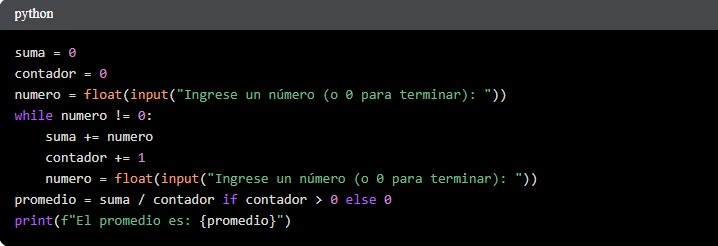
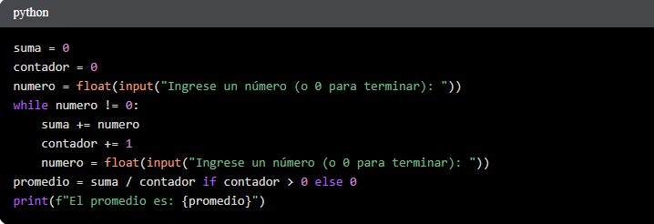
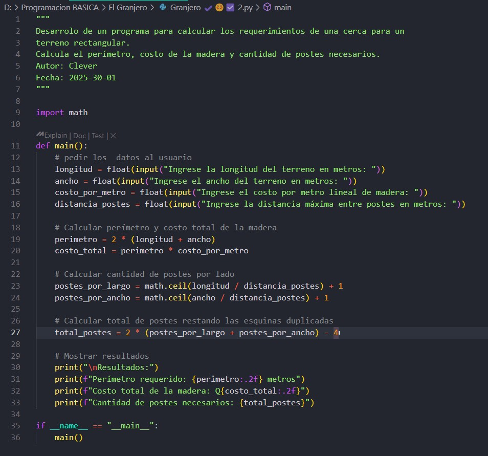

Mis aprendizajes en Computación
1
1. Diseño de Aplicaciones y Recopilación de Feedback del Usuario:En un proyecto de clase, diseñamos una aplicación móvil similar a Uber,
pero adaptada a las necesidades de la comunidad universitaria de la UVG (UVG).
Este proyecto involucró no solo el diseño de la interfaz de usuario (UI)
y la experiencia de usuario (UX), sino también la crucial etapa de
recopilar feedback del usuario a través de entrevistas.
Nuestro prototipo incluía secciones para la búsqueda de alojamiento (apartamentos),
rutas guardadas, configuraciones, foros, un buscador y la selección del
de vehículo (similar a Uber).
Salimos a la universidad a entrevistar a estudiantes sobre nuestra idea. La mayoría recibió positivamente el concepto, sugiriendo que habláramos con las autoridades universitarias para explorar su viabilidad. Sin embargo, algunos estudiantes señalaron similitudes con Uber, expresando dudas sobre su potencial éxito. Esta experiencia me enseñó la importancia de la investigación de usuarios y la validación de ideas a través de la retroalimentación directa.
2
2. Fundamentos de Programación en Python: programacion BasicaEn la clase de Programación Básica, he consolidado mis habilidades en programación utilizando Python. He realizado varios ejercicios que me han ayudado a comprender conceptos fundamentales como los ciclos while, la entrada de datos del usuario y las estructuras condicionales.
3
Problema de la CercaEn la clase de Programación Básica, el 1 de marzo de 2025, si no estoy mal, se nos planteó un problema que requería integrar conocimientos matemáticos con la programación: calcular los requerimientos para cercar un terreno rectangular. El problema simulaba la situación de un granjero que necesita calcular el perímetro de su terreno, el costo de la madera para la cerca y la cantidad de postes necesarios. Esto requirió que tradujera las fórmulas geométricas para el perímetro y el área a código Python.
1
Evidencia:Aunque no puedo incluir las grabaciones de las entrevistas, puedo describir la estructura de la misma, incluyendo preguntas abiertas sobre la utilidad de la aplicación, su diseño y sus posibles mejoras. También puedo incluir bocetos de la interfaz de usuario del prototipo VRVG.
MetacognicionEste proyecto me hizo consciente de la importancia de comprender las necesidades del usuario antes de desarrollar cualquier aplicación. No basta con tener una buena idea; es fundamental validar esa idea con el público objetivo para asegurar su éxito. Aprendí la importancia de la iteración y la adaptación del diseño basado en el feedback recibido.
2
EvidenciaA continuación, se presentan ejemplos de código que ilustran algunos de los ejercicios realizados:
Ciclo while para imprimir números del 1 al 10: Cálculo del promedio de números ingresados por el usuario:

Metacognicion
Cálculo del promedio de números ingresados por el usuario:

Metacognicion
Estos ejercicios me han ayudado a comprender la lógica fundamental de la programación y a desarrollar habilidades para escribir código limpio y eficiente. He aprendido a descomponer problemas en pasos más pequeños y a utilizar estructuras de control de flujo para controlar el flujo de ejecución de un programa. La práctica constante es clave para dominar estos conceptos.
3
EvidenciaA continuación, se presenta un ejemplo de cómo implementé la solución en Python:
 MetacognicionEste ejercicio me permitió combinar conocimientos de diferentes áreas, como matemáticas y programación. Aprendí a traducir un problema del mundo real en un programa de computadora, teniendo en cuenta variables y posibles errores. La precisión en los cálculos y la claridad del código fueron esenciales para obtener una solución correcta y comprensible. Además, me hizo reflexionar sobre la importancia de documentar el código para que otros puedan entenderlo fácilmente. Este problema me hizo darme cuenta de que la programación no es solo escribir código, sino también comprender el problema y conceptualizar la solución.